- Koleje Mazowieckie
-
Stadler Flirt 3 (ER160)

ER160
Te pociągi były największym zamówieniem w historii polskiej kolei (71 sztuk za 2,2 mld zł). Na widoczny jeden z nich jadący do Celestynowa, zatrzymując się w Otwocku. -
Pesa Gamma (111 Eb)

111Eb-001
Elektrowóz wraz z wagonami Sundeck mogą tworzyć składy typu Push&Pull (lokomotywa może być sterowana z kabiny sterniczej specjalnego wagonu). Taki właśnie skład znajduje się na zdjęciu na stacji Warszawa Główna. -
Pafawag 5B/6B (EN57)

EN57-1934
EN57 to najłdłużej i w największej ilości produkowany pociąg na świecie (1962–1993 w liczbie 1429 sztuk). Na zdjęciu widać przedstawiciela serii III, który prowadzi pociąg z Grodziska Mazowieckiego do Warszawy Głównej. - WKD
-
Pesa Mazovia (EN95)
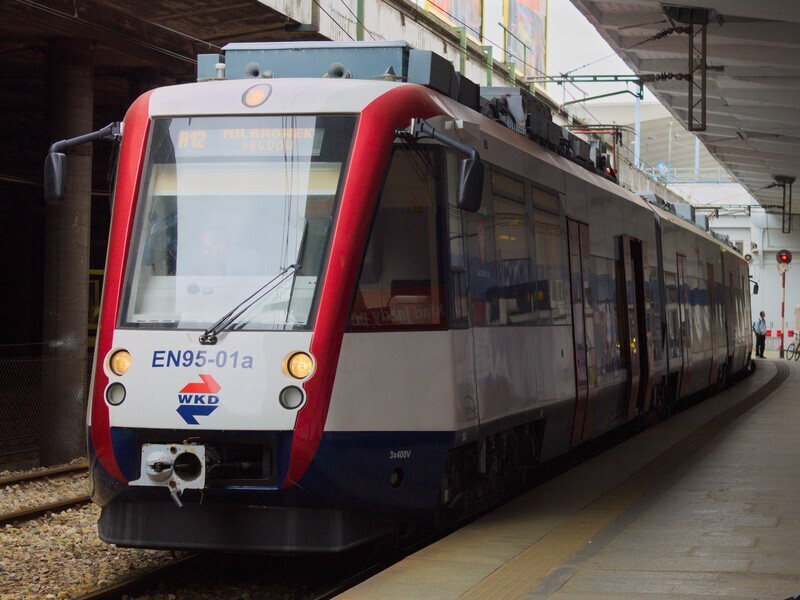
EN95-001
Jedyny jednoprzestrzenny pojazd WKD, a także jeden z pierwszych pociągów wyprodukowanych przez firmę PESA Bydgoszcz. Aktualnie pojazd nie jest w ruchu, i oczekuje na naprawę główną P5. -
Newag 39WE (EN100)

EN100-04
Najnowszy we flocie WKD, wykonany przez firmę Newag. Jest żargonowo nazywany "Predator" i "Darth Vader". Ten na zdjęciu jedzie do Podkowy Leśnej. -
Pesa 33WE (EN97)

EN97-011
EN97 to najpowszechniejszy pojazd na sieci WKD, powstał na bazie EN95. Na zdjęciu widać pociąg do stacji Grodzisk Mazowiecki Radońska. - SKM Warszawa
- Newag Impuls (35WE)

35WE-010
Aktualnie najnowszy pojazd SKM. Na zdjęciu widoczny 35WE-010 po skończonym biegu. Za chwilę maszynista zmieni kabinę, a pociąg pojedzie w drogę powrotną do Pruszkowa. - Pesa Elf (27WE)

27WE-005
Najliczniejszy pojazd we flocie SKM. Można go spotkać na praktycznie wszystkich liniach SKM. Na zdjęciu widać SKM z Pruszkowa do Otwocka jako linia S1. - Newag Halny (14WE)

14WE-04
Pierwszy nowoczesny skład warszawskiej SKM. Został zbudowany na bazie EN57. 6 z tych pojazdów zostało pśrednio lub bezpośrednio sprzedane dla Kolei Śląskich.

-
Pol regio - Newag Impuls 2 (EN98)
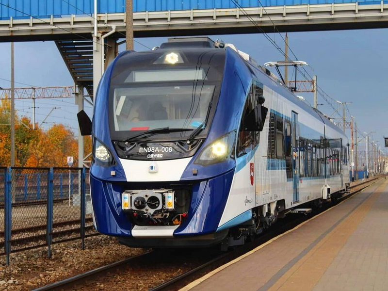
EN98-006
Aktualnie najnowocześniejszy pojazd w województwie Lubelskim (jeździ od 30 wrześna 2021 roku).
EN98-006 (37WEa) jako R22352 relacji Chełm-Lublin Główny stoi w peronach stacji Chełm i czeka na odjazd. - Pesa 214M (SA103)

SA103-012
Autobus szynowy firmy PESA, w barwach województwa Lubelskiego, obsługuje letnie weekendowe połączenie Włodawa-Chełm. Pociąg odjeżdża z przystanku "Okuninka-Białe" w kierunku Sobiboru. - Pafawag 5B/6B (EN57, modrnizacja typu ALd)

EN57ALd-2234
Zmodernizowene jednostki są podstawowym taborem wielu przwoźników w kraju, nie inaczej jest w województwie Lubelskim. EN57ALd-2234 oczekuje na odjazd do Rejowca, stojąc przy Chełmskich peronach. -
Inter city - Newag Gryffin (EU160)

EU160-001
Aktualnie najnowsza lokomotywa we flocie PKP IC. Została zamówiona w 2018 roku w ilości 30 sztuk w firmie NEWAG Nowy Sącz. Lokomotywy te obsługują wiele połączeń w kraju np. IC "Lubuszanin" z Chełma do Zielonej Góry, który jest widoczny na zdjęciu. - Pesa Gama (SU160)

SU160-009
Spalinowóz na początku miał sporo problemów, ale po wielu naprawach pojazdy można spotkać na wielu lubelskich szlakach. Na zdjęciu gdzie lokomotywa SU160 wjeżdża w lubelskie perony. - Pesa Dart (ED161)

ED161-007
EZT nazywany potocznie "Polskim tańszym Pendolino". Ten na zdjęciu jedzie jako IC6220 z Wrocławia do Lublina. - Ukrzaliznycia (pol. Koleje Ukraińskie)
- Pesa 630M

Pesa 630M-001
Szynobus Kolei Ukraińskich produkcji bydgoskiej PESY jedzie do Chełma. Niestety, połączenie Chełm-Kowel zostało zlikwidowane w 2019 roku. - HYUNDAI Rotem HRCS2

HRCS2-008
Ten pociąg koreańskiego producenta obsługuje połączenia z Kijowa do Polski po szlakach szerokotorowychc (1520mm). - EKr1 Tarpan

EKr1 Tarpan
Skład, ze względu na swój kształt, jest nazywany żartobliwie "Ukraińskim pendolino". Obsługuje dalekobieżne połączenia z Kijowa i Odessy.

-
Pol regio - Pafawag 5Bg/6Bg (EN71)

EN71-022
EN71 jest wydłużoną wersją EN57. Posiada dodatkowy człon silnikowy. Na zdjęciu widoczy na stacji Wrocław Główny jako R66653 do Ziębic. -
Newag Impuls (ED78)

ED78-024
Jedna z wielu wersji Impulsa. Ta akurat stoi na stacji Wrocław Główny, skąd odjedzie do Poznańa jako pociąg R67923. - Pafawag 5B/6B (EN57AL)

EN57AL-2115
Zmodernizowany EN57AL-2115 oczekuje na odjazd do Zielonej Góry jako R67407, stojąc przy Wrocławskich peronach. - Koleje
Dolnośląskie - Newag Impuls (31WE)

31WE-020
Dolnośląski 4-członowy Impuls widoczny na zdjęciu, stoi na stacji Szklarska Pręba Górna na chwilę przed odjazdem do Wrocławia. -
Newag Impuls 2 (36WEh)

36WEh-012
Pociągi posiadają napęd hybrydowy (posiadają napęd spalinowy i elektryczny). Pociąg swą premierę na dolnym śląsku miał w październiku 2021 roku. - Pesa 218Mb (SA134)

SA134-023
SA134-023 relacji Wrocław Główny - Kudowa Zdrój oczekuje godziny odjazdu w peronach stacji Kamieniec Ząbkowicki. -
České dráhy (pol. Koleje Czeskie) - Simens RegioSpider

840 012-9
Model 840 jest przeznaczony do ruchu górskiego. Pociąg obsuługuje m.in. trasę Liberec-Szklarska Poręba Górna. - 754

754 026-3
Lokomotywy dzierżawione dla PKP IC. Na zdjęciu jedna z nich prowadzi TLK "Sudety" relacji Jelenia Góra - Kraków Gł. Pociąg wjeżdża na stację Dzierżoniów. -
Pesa Link (RegioShark)

844 003-4
Pojazdy przeznaczono do obsługi tras regionalnych. Zostały zakupione w 2011 roku u firmy PESA Bydgoszcz. Z powodu swojego wyglądu, nazywany jest rekinem.
.jpg)
-
Pol regio - Pafawag 5B/6B (EN57FPS)
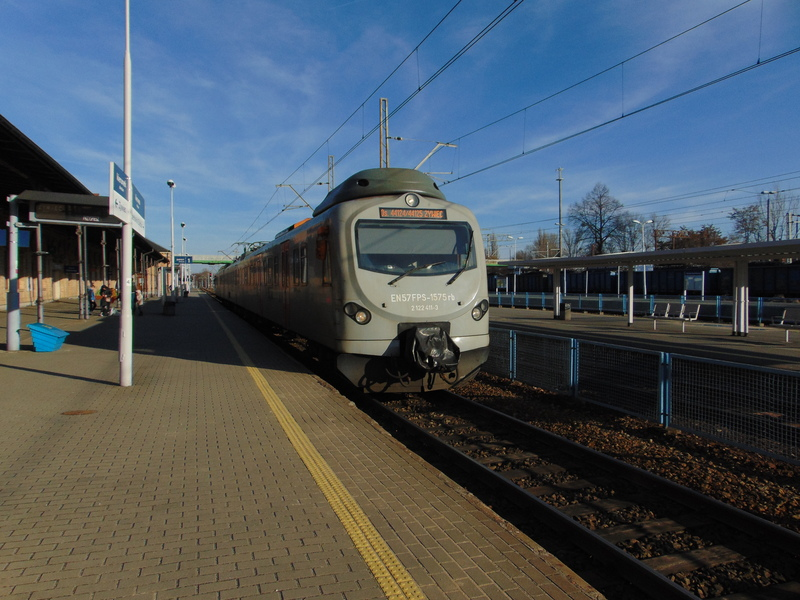
EN57FPS-1575
EN57 to najnowocześniejsza modernizacja EZT EN57, wykonana przez firm HCP Cegielski. Model na zdjęciu sfotografowałem na stacji Bielsko-Biała Główna - Pafawag 5B/6B (modernizacja)
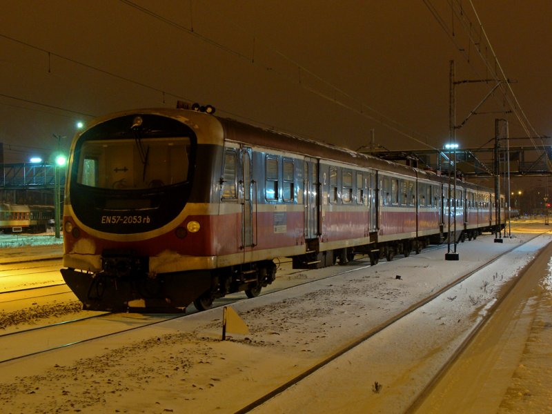
EN57-2053
Kolejny dowód na to że składy EN57 są nieśmiertelne! Egzemplarz widoczny na zdjęciu przeszedł modernizace, i stoi na stacji w Katowicach - Pafawag 5B/6B (EN57)
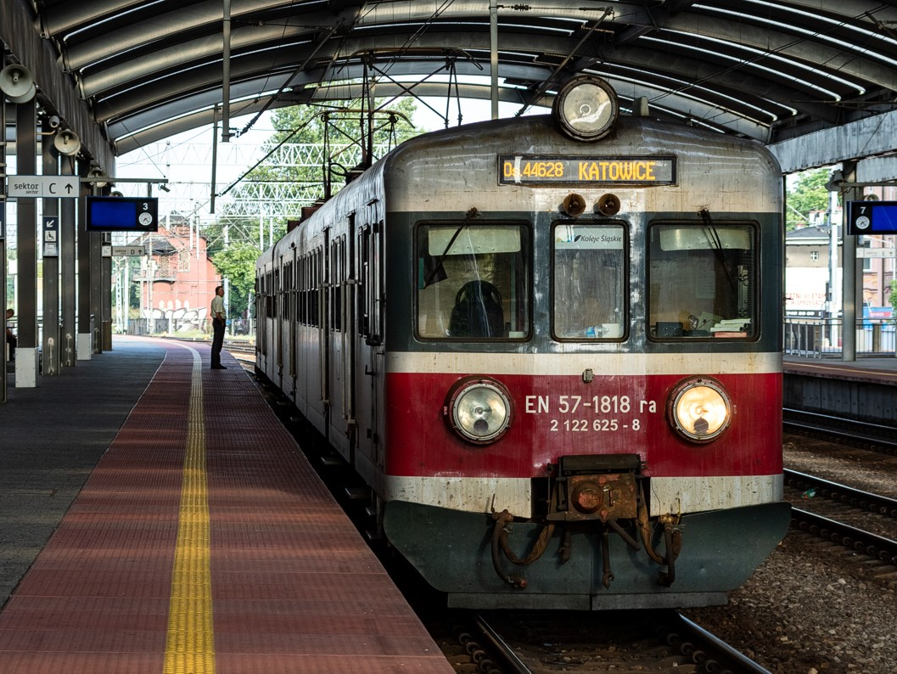
EN57-1818
EN57 jest podstawowym taborem Polregio w każdym województwie i nie inczej jest na Śląsku. EN57-1818 na stacji Katowice po skończonym biegu. - Koleje
Śląskie - Pesa Elf
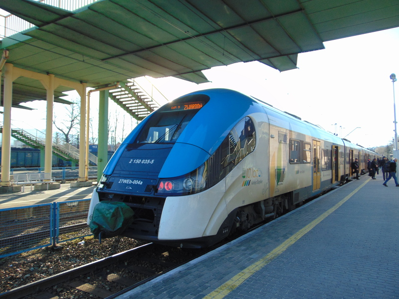
27WEb-004
Seria pojazdów jest bardzo popoularna we flocie śląskiego przewoźnika. Przedstawwiciej pierwszej generacji tego pojazdu widoczny na zdjęciu stoi aktulanie na stacji Bielsko-Biała Główna - Pesa Elf 2
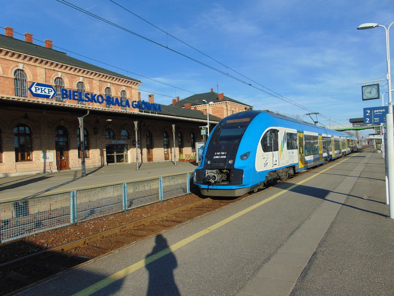
22WEd-005
Druga generacja pojazdów elf (podobne miały jeździć w SKM Warszawa, ale niestety miasto rozwiązało umowę z powodu opóźnień w dostawach). Na zdjęciu widzimy skład na stacji Bielsko-Biała Główna. - Stadler Flit
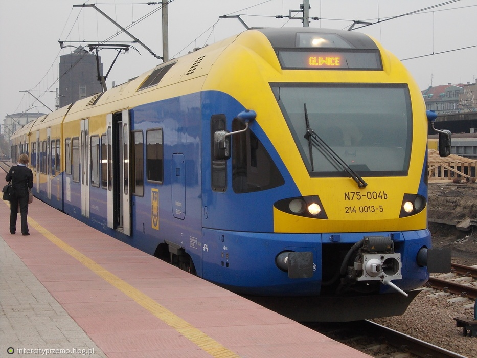
EN75-004
Pociąg często spotykany na śląskich torach. Wyróżnia się innym malowaniem od pozostałych składów (niebiesko-żółte zamiast biało niebieskich) -
Leo Express - Stadler Flirt
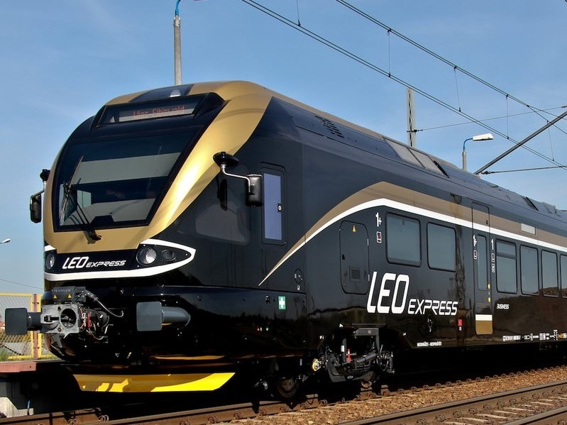
Stadler Flirt
Podobne pojazdy jeżdżą w barwach Kolei Mazowieckich i Kolei Śląskich. Składy te można spotkać na trasie Praga-Katowice - Alstom Lint
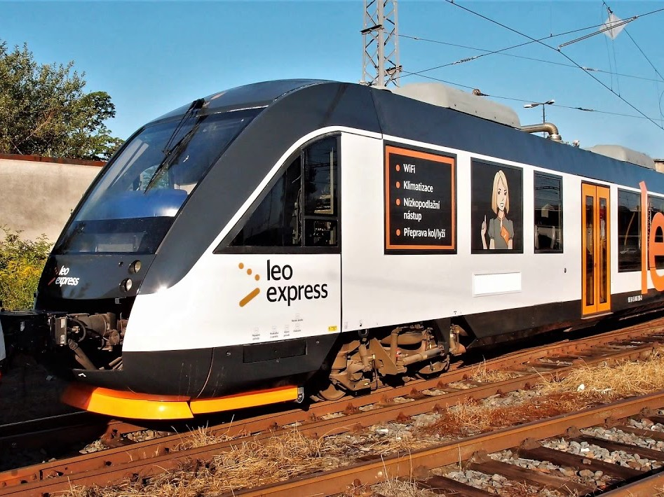
Alstom Lint
Jedyny pojazd spalinowy we flocie przewoźnika. Składy zostały sprzedane do Arrivy. - CRRC Sirius
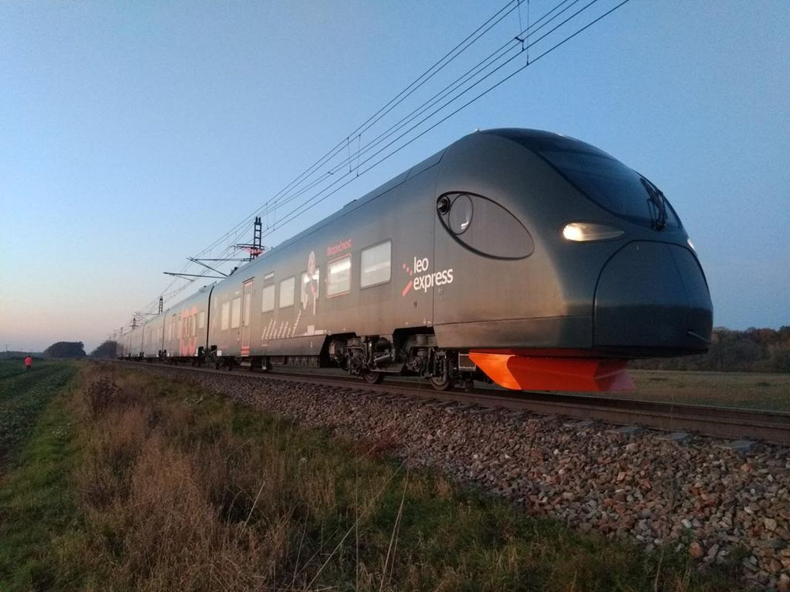
665
Jednostka zakupiona u Chińskiego producenta CRRS jest obecenie najnowocześniejszym pociąiem u przewoźnika.